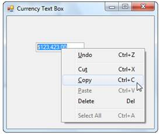
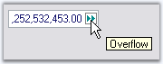
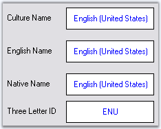

The CurrencyTextBox control also provides support for clipboard operations that are compatible with currency data. TheClipMode property specifies if formatting characters are to be copied to the clipboard.
|
CurrencyTextBox Property |
Description |
|
ClipMode |
Specifies whether to include or exclude literal characters in input mask while doing copy command. The options are,
ExcludeFormatting and IncludeFormatting. |
|
[C#]
this.currencyTextBox1.ClipMode = Syncfusion.Windows.Forms.Tools.CurrencyClipModes.ExcludeFormatting; |
|
[VB.NET]
Me.currencyTextBox1.ClipMode = Syncfusion.Windows.Forms.Tools.CurrencyClipModes.ExcludeFormatting |

Figure 515: CurrencyTextBox with Clipboard Menu
You can display an indicator in the textbox, when the currency value is displayed, beyond its boundaries. We can also display tooltip for the overflow indicator. The tooltip text is specified in OverflowIndicatorToolTipText. Set ShowOverflowIndicatorproperty to true to enable this feature. Set ShowOverflowIndicatorToolTip property to true to display the tooltip text.
|
[C#]
this.currencyTextBox1.OverflowIndicatorToolTipText = "Overflow"; this.currencyTextBox1.ShowOverflowIndicator = true; this.currencyTextBox1.ShowOverflowIndicatorToolTip = true; |
|
[VB.NET]
Me.currencyTextBox1.OverflowIndicatorToolTipText = "Overflow" Me.currencyTextBox1.ShowOverflowIndicator = True Me.currencyTextBox1.ShowOverflowIndicatorToolTip = True |

Figure 516: Overflow Indicator with ToolTip
The CurrencyTextBox class is globalization aware and uses System.Globalization.CultureInfo for locale-specific information. You can set the control's culture to any installed culture through its culture property.
|
CurrencyTextBox Properties |
Description |
|
Culture |
It sets the culture that is used for formatting the numeric display. |
|
CurrentCultureRefresh |
Specifies whether the culture property is to be refreshed when the culture changes. |
|
SpecialCultureValue |
It sets the mode for the cultures. The options includes:
None, CurrentCulture (default), InstalledCulture, UICulture. |
Figure 517: CultureInfo="Arabic (Saudi Arabia)"
|
[C#]
this.currencyTextBox1.Culture = new System.Globalization.CultureInfo("ar-SA"); this.currencyTextBox1.CurrentCultureRefresh = true; this.currencyTextBox1.SpecialCultureValue = Syncfusion.Windows.Forms.Tools.SpecialCultureValues.None; |
|
[VB.NET]
Me.currencyTextBox1.Culture = New System.Globalization.CultureInfo("ar-SA") Me.currencyTextBox1.CurrentCultureRefresh = True Me.currencyTextBox1.SpecialCultureValue = Syncfusion.Windows.Forms.Tools.SpecialCultureValues.None |
User Override for Culture
|
CurrencyTextBox Properties |
Description |
|
UseUserOverride |
Specifies if the NumberFormatInfo used for formatting will use the User overrides for the culture. |
|
[C#]
this.currencyTextBox1.UseUserOverride = false; this.currencyTextBox1.Culture = new CultureInfo(CultureInfo.CurrentUICulture.LCID,this.currencyTextBox1.UseUserOverride); |
|
[VB.NET]
Me.currencyTextBox1.UseUserOverride = False Me.currencyTextBox1.Culture = New CultureInfo(CultureInfo.CurrentUICulture.LCID,Me.currencyTextBox1.UseUserOverride) |
Culture name
The culture name can be displayed in the different format according to the specified culture value. Refer the following table in detail.
|
CurrencyTextBox.Culture Properties |
Description |
|
DisplayName |
Gets the culture name in the format "<language full>(<country/region full>)" in the language of the localized version of the .NET framework. |
|
EnglishName |
Gets the culture name in the format "<language full>(<country/region full>)" in english. |
|
NativeName |
Gets the culture name in the format "<language full>(<country/region full>)" in the language that the culture is set to display. |
|
ThreeLetterWindowsLanguageName |
Gets the three letter code for the language as specified in the windows API. |
The following figure illustrates this when the culture is 'en-US'.
|
[C#]
this.label11.Text = this.currencyTextBox1.Culture.DisplayName; this.label12.Text = this.currencyTextBox1.Culture.EnglishName; this.label13.Text = this.currencyTextBox1.Culture.NativeName; this.label14.Text = this.currencyTextBox1.Culture.ThreeLetterWindowsLanguageName; |
|
[VB.NET]
Me.label11.Text = Me.currencyTextBox1.Culture.DisplayName Me.label12.Text = Me.currencyTextBox1.Culture.EnglishName Me.label13.Text = Me.currencyTextBox1.Culture.NativeName Me.label14.Text = Me.currencyTextBox1.Culture.ThreeLetterWindowsLanguageName |

Figure 518: Culture Settings